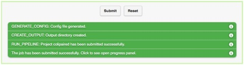

5. Graphic User Interface (GUI)¶
The User Interface was mainly implemented in JQuery Mobile, CSS, javascript and perl CGI. It is a HTML5-based user interface system designed to make responsive web sites and apps that are accessible on all smartphone, tablet and desktop devices. (see How to make an app icon on the mobile device)
See GUI page
5.1. User Login¶
A user management system has been implemented to provide a level of privacy/security for a user’s submitted projects. When this system is activated, any user can view projects that have been made public, but other projects can only be accessed by logging into the system using a registered local EDGE account or via an existing social media account (Facebook, Google+, Windows, or LinkedIn). The users can then run new jobs and view their own previously run projects or those that have been shared with them. Click on the upper-right user icon will pop up an user login window.
5.2. Upload Files¶
For LANL security policy, the function is not implemented at https://bioedge.lanl.gov/edge_ui/.
EDGE supports input from NCBI Sequence Reads Archive (SRA) and select files from the EDGE server. To analyze users’ own data, EDGE allows user to upload fastq, fasta and genbank (which can be in gzip format) and text (txt). Max file size is ‘5gb’ and files will be kept for 7 days. Choose “Upload files” from the navigation bar on the left side of the screen. Add users files by clicking “Add Files” buttion or drag files to the upload feature window. Then, click “Start Upload” button to upload files to EDGE server.
5.3. Initiating an analysis job¶
Choose “Run EDGE” or “Run Qiime” from the navigation bar on the left side of the screen.
5.3.1. Run EDGE¶
Click “Run EDGE” will cause a section to appear called “Input Raw Reads.” Here, you may browse the EDGE Input Directory and select FASTQ files containing the reads to be analyzed. EDGE supports gzip compressed fastq files. At minimum, EDGE will accept two FASTQ files containing paired reads and/or one FASTQ file containing single reads as initial input. Alternatively, rather than providing files through the EDGE Input Directory, you may decide to use as input reads from the Sequence Read Archive (SRA). In this case, select the “yes” option next to “Input from NCBI Sequence Reads Archive” and a field will appear where you can type in an SRA accession number.
In addition to the input read files, you have to specify a project name. The project name is restricted to only alphanumerical characters and underscores and requires a minimum of three characters. For example, a project name of “E. coli. Project” is not acceptable, but a project name of “E_coli_project” could be used instead. In the “Description” fields you may enter free text that describes your project. If you would like, you may use as input more reads files than the minimum of 2 paired read files or one file of single reads. To do so, click “additional options” to expose more fields, including two buttons for “Add Paired-end Input” and “Add Single-end Input”.
In the “additional options”, there are several more options, for output path, number of CPUs, and config file. In most cases, you can ignore these options, but they are described briefly below.
5.3.2. Run Qiime¶
Click “Run Qiime” will cause a section to appear for Qiime input and parameters. Currently, EDGE suports three amplicon types, 16s using GreenGenes database, 16s/18s using SILVA database, and Fungal ITS. Similar to “Run EDGE”, input can be either from the Sequence Read Archive (SRA, internet required) or browse the EDGE Input Directory based on the reads type. The Qiime pipeline support one Reads Type in a run, paired-reads, single end reads, or de-multiplexed reads directory. There is also a mapping file input requirment which is adapted from QIIME Metadata mapping file. This mapping file contains all of the information about the samples necessary to perform the data analysis. It is in tab-delimited format. In general, the header for this mapping file starts with a pound (#) character, and generally requires a “SampleID”, “BarcodeSequence”, and a “Description”.
Mapping File Example:
| #SampleID | BarcodeSequence | SampleType | Description |
|---|---|---|---|
| Sample1 | ACATACCGTCTA | Stool | MiSeq,metagenome |
| Sample2 | ACCATGCGTCTA | Blood | MiSeq,clinical |
| Control1 | AGCCATCGTCTA | Control | Negative |
| Control2 | CGTCTAACCATG | Control | Spike-in Control |
When the reads type is “De-multiplexed Reads Directory “, the mapping file needs a ‘Files’ column with FASTQ filenames for each sampleID. It can be paired-end or single-end FASTQ file and paired-end FASTQ files are comma-separated.
| #SampleID | Files | SampleType | Description |
|---|---|---|---|
| Sample1 | S1.R1.fastq,S1.R2.fastq | Stool | MiSeq,metagenome |
| Sample2 | S2.R1.fastq,S2.R2.fastq | Blood | MiSeq,clinical |
| Control1 | C1.R1.fastq,C1.R2.fastq | Control | Negative |
| Control2 | C2.R1.fastq,C2.R2.fastq | Control | Spike-in Control |
5.3.3. Run DETEQT¶
Click “Run DETEQT” will cause a section to appear for DETEQT input and parameters. The DETEQT is a pipeline for diagnostic targeted sequencing adjudication. You may find more information from here. The DETEQT pipeline required user to select a directory, a metadata mapping file and a targeted amplicon references. The metadata mapping file is a tab-delimited file or excel file which header or first row includes #SampleID and Files. In the Files column, the paired-end fastq files are separated by a comma(,) and all the fastq files should be located in the input directory. The reference is comprised of only target regions in FASTA format in the assay.
Metadata Mapping File example:
| #SampleID | Files |
|---|---|
| Dengue | sample.1.fq,sample.2.fq |
| Flu | flu.1.fq,flu.2.fq |
| Ebola | ebola.1.fq,ebola.2.fq |
| MERS | mers.1.fq,mers.2.fq |
| SARS | sars.1.fq,sars.2.fq |
| Zika | zika.1.fq,zika.2.fq |
| Rota | rota.1.fq,rota.2.fq |
| HIV | hiv.1.fq,hiv.2.fq |
| Hanta | hanta.1.fq,hanta.2.fq |
| HCV | hcv.1.fq,hcv.2.fq |
5.3.4. Run PiReT¶
Click “Run PiReT” will cause a section to appear for PiReT input and parameters. The PiReT is a pipeline for Reference based Transcriptomics analysis. You may find more information from PiReT github. The PiReT pipeline required user to select a directory, a experimental design file and references FASTA and GFF files in the parameters section. The experimental file is a tab-delimited file or excel file which header or first row includes #SampleID, Files, and Group. In the Files column, the paired-end fastq files are separated by a colon(:) and all the fastq files should be located in the input directory. The feature ID in the reference GFF files should be uniqe within the scope of the GFF file.
Experimental Design File example:
| #SampleID | Files | Group |
|---|---|---|
| samp1 | samp1_R1.fastq:samp1_R2.fastq | liver |
| samp2 | samp2_R1.fastq:samp2_R2.fastq | spleen |
| samp3 | samp3_R1.fastq:samp3_R2.fastq | spleen |
| samp4 | samp4_R1.fastq:samp4_R2.fastq | liver |
| samp5 | samp5_R1.fastq:samp5_R2.fastq | liver |
| samp6 | samp6_R1.fastq:samp6_R2.fastq | spleen |
5.3.5. Number of CPUs¶
Additionally, you may specify the number of CPUs to be used. The default and minimum value is one-fourth of total number of server CPUs. You may adjust this value if you wish. Assuming your hardware has 64 CPUs, the default is 16 and the maximum you should choose is 62 CPUs. Otherwise, if the jobs currently in progress use the maximum number of CPUs, the new submitted job will be queued (and colored in grey. Color-coding see Checking the status of an analysis job). For instance, if you have only one job running, you may choose 62 CPUs. However, if you are planning to run 6 different jobs simultaneously, you should divide the computing resources (in this case, 10 CPUs per each job, totaling 60 CPUs for 6 jobs).
5.3.6. Config file¶
Below the “Use # of CPUs” field is a field where you may select a configuration file. A configuration file is automatically generated for each job when you click “Submit.” This field could be used if you wanted to restart a job that hadn’t finished for some reason (e.g. due to power interruption, etc.). This option ensures that your submission will be run exactly the same way as previously, with all the same options.
See also
5.3.7. Batch project submission¶
The “Batch project submission” section is toggled off by default. Clicking on it will open it up and toggle off the “Input Sequence” section at the same time. When you have many samples in “EDGE Input Directory” and would like to run them with the same configuration, instead of submitting several times, you can compile a Excel file with project name, fastq inputs and optional project descriptions (you can download the example excel file and fill it with your own data) and submit through the “Batch project submission” section
5.4. Choosing processes/analyses¶
Once you have selected the input files and assigned a project name and description, you may either click “Submit” to submit an analysis job using the default parameters, or you may change various parameters prior to submitting the job. The default settings include quality filter and trimming, assembly, annotation, and community profiling. Therefore, if you choose to use default parameters, the analysis will provide an assessment of what organism(s) your sample is composed of, but will not include host removal, primer design, etc. Below the “Input Your Sample” section is a section called “Choose Processes / Analyses”. It is in this section that you may modify parameters if you would like to use settings other than the default settings for your analysis (discussed in detail below).
5.4.1. Pre-processing¶
Pre-processing is by default on, but can be turned off via the toggle switch on the right hand side. The default parameters should be sufficient for most cases. However, if your experiment involves specialized adapter sequences that need to be trimmed, you may do so in the Quality Trim and Filter subsection. There are two options for adapter trimming. You may either supply a FASTA file containing the adapter sequences to be trimmed, or you may specify N number of bases to be trimmed from either end of each read.
Note
Trim Quality Level can be used to trim reads from both ends with defined quality. “N” base cutoff can be used to filter reads which have more than this number of continuous base “N”. Low complexity is defined by the fraction of mono-/di-nucleotide sequence. Ref: FaQCs.
The host removal subsection allows you to subtract host-derived reads from your dataset, which can be useful for metagenomic (complex) samples such as clinical samples (blood, tissue), or environmental samples like insects. In order to enable host removal, within the “Host Removal” subsection of the “Choose Processes / Analyses” section, switch the toggle box to “On” and select either from the pre-build host list ( Human , Invertebrate Vectors of Human Pathogens , PhiX , RefSeq Bacteria and RefSeq Viruses .) or the appropriate host FASTA file for your experiment from the navigation field. The Similarity (%) can be varied if desired, but the default is 90 and we would not recommend using a value less than 90.
5.4.2. Assembly And Annotation¶
The Assembly option by default is turned on. It can be turned off via the toggle button. EDGE performs iterative kmers de novo assembly by IDBA-UD . It performs well on isolates as well as metagenomes but it may not work well on very large genomes. By default, it starts from kmer=31 and iterative step by adding 20 to maximum kmer=121. When the maximum k value is larger than the input average reads length, it will automatically adjust the maximum value to average reads length minus 1. User can set the minimum cutoff value on the final contigs. By default, it will filter out all contigs with size smaller than 200 bp.
The Annotation module will be performed only if the assembly option is turned on and reads were successfully assembled. EDGE has the option of using Prokka or RATT to do genome annotation. For most cases, Prokka is the appropriate tool to use, however, if your input is a viral genome with attached reference annotation (GenBank file), RATT is the preferred method. If for some reason the assembly fails (ex: run out of Memory), EDGE will bypass any modules requiring a contigs file including the annotation analysis.
5.4.3. Reference-based Analysis¶
The reference-based analysis section allows you to map reads/contigs to the provided references, which can be useful for known isolated species such as cultured samples, to get the coverage information and validate the assembled contigs. In order to enable reference-based analysis, switch the toggle box to “On” and select either from the pre-build Reference list ( Ebola virus genomes , E.coli 55989 , E.coli O104H4 , E.coli O127H6 and E.coli K12 MG1655 .) or the appropriate FASTA/GenBank file for your experiment from the navigation field.
Given a reference genome fasta file, EDGE will turn on the analysis of the reads/contigs mapping to reference and JBrowse reference track generation. If a GenBank file is provided, EDGE will also turn on variant analysis.
5.4.4. Taxonomy Classification¶
Taxonomic profiling is performed via the “Taxonomy Classification” feature. This is a useful feature not only for complex samples, but also for purified microbial samples (to detect contamination). In the “Community profiling” subsection in the “Choose Processes / Analyses section,” community profiling can be turned on or off via the toggle button.
There is an option to “Always use all reads” or not. If “Always use all reads” is not selected, then only those reads that do not map to the user-supplied reference will be shown in downstream analyses (i.e. the results will only include what is different from the reference). Additionally, the user can use different profiling tools with checkbox selection menu. EDGE uses multiple tools for taxonomy classification including GOTTCHA (bacterial & viral databases) , MetaPhlAn , Kraken and reads mapping to NCBI RefSeq using BWA .
Turning on the “Contig-Based Taxonomy Classification” section will initiate mapping contigs against NCBI databases for taxonomy and functional annotations.
5.4.5. Phylogenomic Analysis¶
EDGE supports 5 pre-computed pathogen databases ( E.coli, Yersinia, Francisella, Brucella, Bacillus) for SNP phylogeny analysis. You can also choose to build your own database by first selecting a build method (either FastTree or RAxML), then selecting a pathogen from the “Search Genomes” search function. You can also add FASTA files or SRA Accessions.
5.4.6. Specialty Genes Profiling¶
For specialty gene analysis, the user selects read-based analysis and/or ORF(contig)-based analysis.
For read-based analysis antibiotic resistance genes and virulence genes are detected using Huttenhower lab’s progam ShortBRED. The antibiotic resistance gene database was generated by the developers of ShortBRED using genes from ARDB and Resfams. The virulence genes database was generated by the developers of EDGE using VFDB.
For ORF-based analysis, antibiotic resistance genes are detected using CARD’s (Comprehensive Antibiotic Resistance Database) program RGI (Resistance Gene Identifier). RGI uses CARD’s custom database of antibiotic resistance genes. The virulence genes are detected using ShortBRED with a database generated by the developers of EDGE using VFDB.
5.4.7. PCR Primer Tools¶
EDGE includes PCR-related tools for use by those who want to use PCR data for their projects.
Primer Validation
The “Primer Validation” tool can be used to verify whether and where given primer sequences would align to the genome of the sequenced organism. Prior to initiating the analysis, primer sequences in FASTA format must be deposited in the folder on the desktop in the directory entitled “EDGE Input Directory.”
In order to initiate primer validation, within the “Primer Validation” subsection switch the “Run Primer Validation” toggle button to “On”. Then, within the “Primer FASTA Sequences” navigation field, select your file containing the primer sequences of interest. Next, in the “Maximum Mismatch” field, choose the maximum number of mismatches you wish to allow per primer sequence. The available options are 0, 1, 2, 3, or 4.
Primer Design
If you would like to design new primers that will differentiate a sequenced microorganism from all other bacteria and viruses in NCBI, you can do so using the “Primer Design” tool. To initiate primer design switch the “Run Primer Design” toggle button to “On”. There are default settings supplied for Melting Temperature, Primer Length, Tm Differential, and Number of Primer Pairs, but you can change these settings if desired.
5.5. Submission of a job¶
When you have selected the appropriate input files and desired analysis options, and you are ready to submit the analysis job, click on the “Submit” button at the bottom of the page. Immediately you will see indicators of successful job submission and job status below the submit button, in green. If there is something wrong with the input, it will stop the submission and show the message in red, highlighting the sections with issues.
5.6. Checking the status of an analysis job¶
Once an analysis job has been submitted, it will become visible in the left navigation bar. There is a grey, red, orange, green color-coding system that indicates job status as follow:
| Status | Not yet begun | Error | In progress (running) | Completed |
|---|---|---|---|---|
| Color | Grey | Red | Orange | Green |
While the job is in progress, clicking on the project in the left navigation bar will allow you to see which individual steps have been completed or are in progress, and results that have already been produced. Clicking the job progress widget at top right opens up a more concise view of progress.
5.7. Monitoring the Resource Usage¶
In the job project sidebar, you can see there is an “EDGE Server Usage” widget that dynamically monitors the server resource usage for %CPU, %MEMORY and %DISK space. If there is not enough available disk space, you may consider deleting or archiving the submitted job with the Action tool described below.
5.8. Management of Jobs¶
Below the resource monitor is the “Action” tool, used for managing jobs in progress or existing projects.
The available actions are:
- View live log A terminal-like screen showing all the command lines and progress log information. This is useful for troubleshooting or if you want to repeat certain functions through command line at edge server.
- Force to rerun this project Rerun a project with the same inputs and configuration. No additional input needs.
- Interrupt running project Immediately stop a running project.
- Delete entire project Delete the entire output directory of the project.
- Remove from project list Keep the output but remove project name from the project list
- Empty project outputs Clean all the results but keep the config file. User can use this function to do a clean rerun.
- Move to an archive directory For performance reasons, the output directory will be put in local storage. User can use this function to move projects from local storage to a slower but larger network storage, which are configured when the edge server is installed.
- Share Project Allow guests and other users to view the project.
- Make project Private/Public Restrict access to viewing the project to only yourself. Or open it everyone.
5.9. Project List Table¶
When you click “My Project List”, all your projects or projects shared to you will show in a table. It lists the projects status, submission time, running time, type and owner. User can select one or more jobs from the checkbox in the project table and perform actions similar to “Action” Widget described in the previous section. The action will apply to all checked projects.
When mouse over the action buttons on the project list page, it will show a pop up info for the action buttons. There is a special action button for multiple projects, “Compare Selected Projects Taxonomy Classification (HeatMap)” which will draw heatmaps of taxonomy profiling results for multiple projects using MetaComp.
5.10. Other Methods of Accessing EDGE¶
5.10.1. Internal Python Web Server¶
EDGE includes a simple web server for single-user applications or other testing. It is not robust enough for production usage, but it is simple enough that it can be run on practically any system.
To run gui, type:
$EDGE_HOME/start_edge_ui.sh
This will start a localhost and the GUI html page will be opened by your default browser.
5.10.2. Apache Web Server¶
The preferred installation of EDGE uses Apache 2 (See Testing the EDGE Installation), and serves the application as a proper system service. A sample httpd.conf (or apache2.conf, depending on your operating system) is provided in the root directory of your installation. If this configuration is used, EDGE will be available on any IP or hostname registered to the machine, on ports 80 and 8080.
You can access EDGE by opening either the desktop link (below), or your browser, and entering http://localhost:80 in the address bar.
Note
If the desktop environment is available, after installation, a “Start EDGE UI” icon should be on the desktop. Click on the green icon and choose “Run in Terminal.” Results should be the same as those obtained by the above method to start the GUI.
The URL address is 127.0.0.1:8080/index.html. It may not be that powerful,as it is hosted by Apache HTTP Server, but it works. With system administrator help, the Apache HTTP Server is the suggested method to host the gui interface.
Note
You may need to configure the edge_wwwroot and input and output in the edge_ui/edge_config.tmpl file while configuring the Apache HTTP Server and link to external drive or network drive if needed.
A Terminal window will display messages and errors as you run EDGE. Under normal operating conditions you can minimize this window. Should an error/problem arise, you may maximize this window to view the error.
Warning
IMPORTANT: Do not close this window!
The Browser window is the window in which you will interact with EDGE.